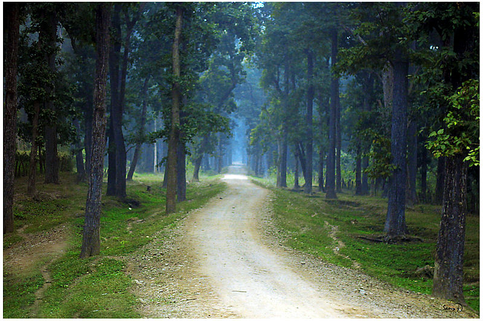
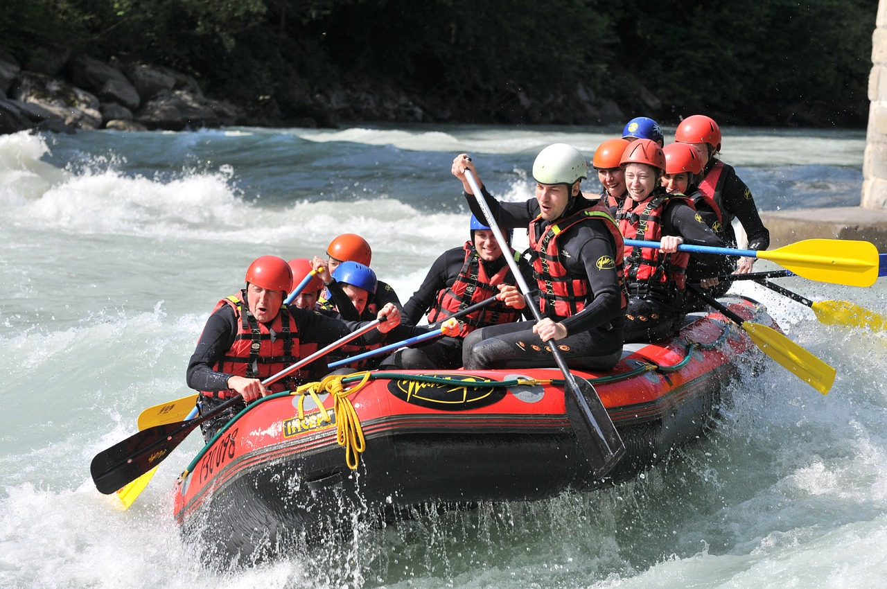

Engrossing Things To Do In Nepal In 2022 For All Adventure Junkies!
10 Things To Do In Nepal
Take a glance at the most fun-filled and thrilling things to do in Nepal that will surely make the holiday a fulfilling one. Keep scrolling down and read along to know more about the most thrilling activities that you can try on your vacay!
- Bhaktapur & Patan – Explore The Cities
- Pokhara – Indulge In Adventure Activities
- Kathmandu Valley – Go For Mountain Biking
- Chitwan National Park – Take A Wildlife Safari
- Bardia National Park – Go For Jungle Treks & Safaris
- Annapurna Circuit – Opt For Trekking
- Gokyo Lake – Enjoy Views Of Mt. Everest
- Bhote Koshi & Seti River – Go for Rafting & Kayaking
- Mount Everest – Fly In A Helicopter Over Hills
- POKHARA – INDULGE IN ZIPLINING
bhaktapur & Patan – Explore The Cities

Exploring the cities of Bhaktapur and Patan is among the leisure things to do in Nepal. Bhaktapur is known for the antique charms of Nepal. The wood carvings of the temples & monuments are truly amazing. Patan, an ancient city of Nepal, is located on the banks of Bagmati River and is known for marvelous temples.
bhaktapur:Click here to open in Google Map
Patan:Click here to open in Google Map
Ideal For
Group Travel Budget Travel Solo TravelPokhara – Indulge In Adventure Activities
Pokhara is a heaven for nature enthusiasts and adventure freaks. Camping, paragliding, and mountain biking are some of the adventurous activities in Nepal that can be done in this lakeside town.
Click here to open in Google Map
Ideal For
Group Travel Adventure Travel Romantic Travel Budget TravelKathmandu Valley – Go For Mountain Biking
Kathmandu is also famous for biking trails and routes. Replete with undulating tracks, lesser-known trails, forests, and valleys, the capital of Nepal is an adventure haven for biking enthusiasts. One can easily avail mountain bikes on rent for exploring this enchanting landscape.
Click here to open in Google Map
Ideal For
Group Travel Adventure Travel Romantic Travel Budget TravelChitwan National Park – Take A Wildlife Safari
The densely marshy terrain of Chitwan, spread over 332 square miles, is a habitat to a large variety of reptiles, mammals, & birds. A wildlife safari through the Chitwan National Park is undeniably one of the most exciting things to do in Nepal. Tourists choose between Elephant Safari and Jeep Safari.
Click here to open in Google Map
Ideal For
Group Travel Adventure Travel Budget Travel Solo TravelBardia National Park – Go For Jungle Treks & Safaris
Spread over 968 sq. km, the Bardia National Park is known to be the largest wilderness terrain of the Terai. This expansive grassland and Sal forest is a tiger’s den. Along with tigers, one can also spot elephants, rhinos (one-horned), crocodiles, Gangetic dolphins, and birds like Bengal floricans & sarus cranes.
Click here to open in Google Map
Ideal For
Group Travel Adventure Travel Romantic Travel Budget TravelAnnapurna Circuit – Opt For Trekking
Nepal is a trekker’s paradise and is known for the astounding trekking routes. The famous trekking routes of Nepal include Annapurna Circuit, Poon Hill, and Langtang. Professional trekkers also hike up to Everest Base Camp. Trekking in Nepal through the plush green rhododendron forests, the gushing rivers, and the deep gorges offers amazingly beautiful views.
Click here to open in Google Map
Ideal For
Group Travel Adventure Travel Budget Travel Solo TravelGokyo Lake – Enjoy Views Of Mt. Everest
One of the most exhilarating things to do in Nepal is viewing the Mount Everest from the Gokyo Lake. The picturesque & serene lake in the Dudh Koshi Valley overlooks the lofty Everest and will surely make your jaw drop.
Click here to open in Google Map
Ideal For
Group Travel Adventure Travel Romantic Travel Budget TravelBhote Koshi & Seti River – Go for Rafting & Kayaking
Bhote Koshi, Lower Seti, Trishuli, Kali Gandaki, Sun Koshi, Kamali, and Marshyangdi rivers are known for kayaking, canoeing, and rafting. These are three fun-filled and thrilling activities in Nepal. Considered as the World’s Best Destination for White Water Rafting and Kayaking, Nepal offers an enthralling experience of electrifying rafting expedition with the splendid hills in the backdrop and terraced paddy farms & charming villages running along.
Click here to open in Google Map
Ideal For
Group Travel Adventure Travel Solo TravelMount Everest – Fly In A Helicopter Over Hills

Exploring the cities of Bhaktapur and Patan is among the leisure things to do in Nepal. Bhaktapur is known for the antique charms of Nepal. The wood carvings of the temples & monuments are truly amazing. Patan, an ancient city of Nepal, is located on the banks of Bagmati River and is known for marvelous temples.
Click here to open in Google Map
Ideal For
Group Travel Adventure Travel Solo TravelPokhara – Indulge In Ziplining
Pokhara is a paradise and all nature lovers must add it to their list. Imagine yourself going smoothly amidst the rustling trees and enjoying a sweeping view of Nepal. What could be more thrilling? So, get ready to pump up your adrenaline by opting for one of the best things to do in Nepal. Soak in the beauty of nature and get ready to be mesmerized by the picturesque views.
Click here to open in Google Map
Ideal For
Group Travel Adventure Travel Romantic Travel Budget Travel